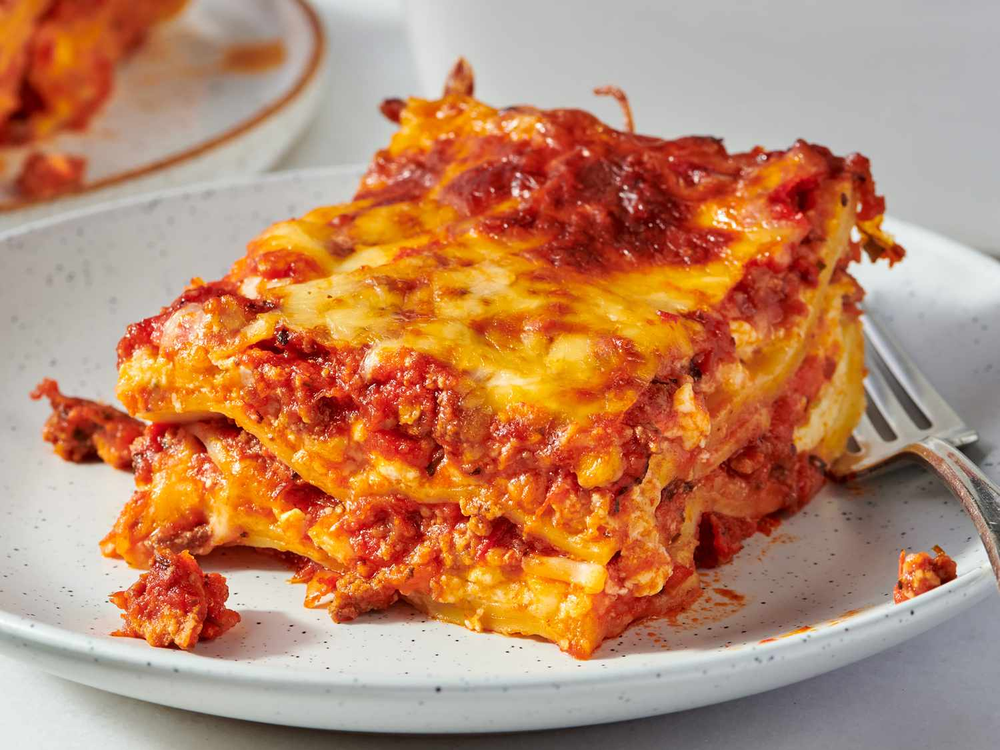

Lasagna is a delicious Italian dish made with layers of pasta, sauce, cheese, and various fillings such as meat or vegetables. It is typically baked in the oven until the cheese is melted and bubbly. Lasagna is a popular comfort food and can be enjoyed as a main course for lunch or dinner. It is often served with a side of garlic bread and a salad.

A cheesy lasagna